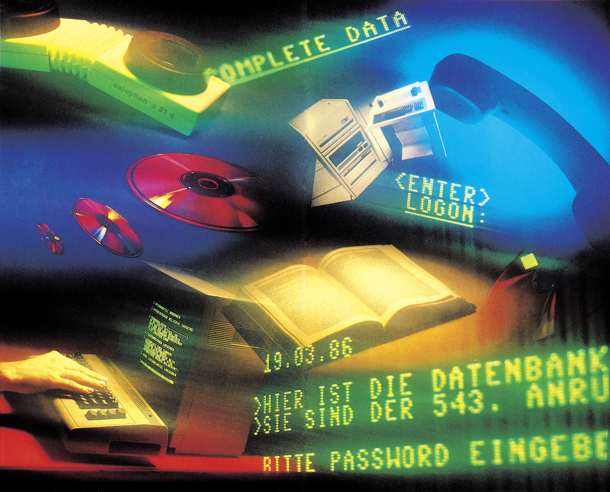
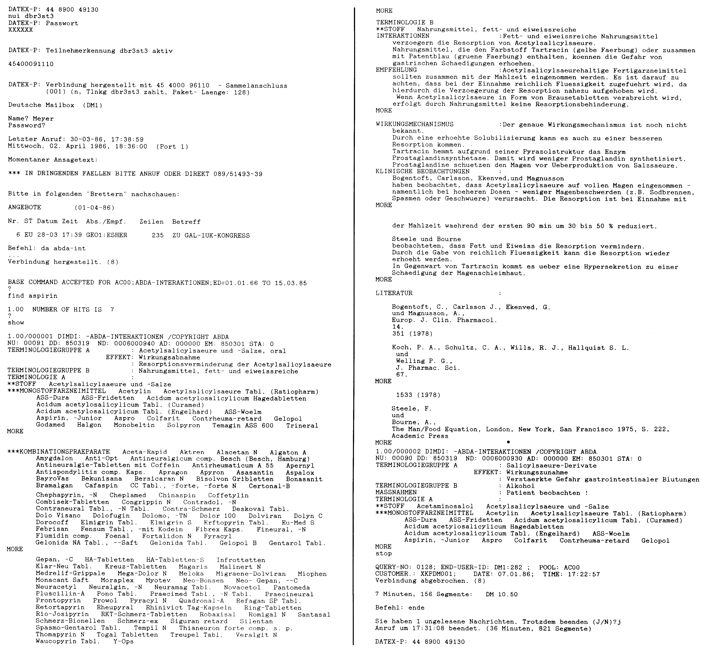

Datenbanken
In professionellen Datenbanken liegen Unmengen von Informationen und Daten zu bestimmten Themen. Das Schönste: Auch mit einem Heimcomputer wie dem C 64 kann man auf die Daten zugreifen.

Bestimmt haben auch Sie zuhause ein Dateiverwaltungs-Programm, das Sie entweder selbst geschrieben oder gekauft haben. Wozu dient in der Regel ein solches Programm? Man speichert die Anschriften von Vereinsmitglieder, Schallplatten, Videokassetten oder den Inhalt von Disketten. Dadurch hat man gegenüber einer Kartei den Vorteil, schnell eine Liste ausgeben zu lassen, die nach bestimmten Kriterien geordnet ist. So ist es mit einem Dateiverwaltungs-Programm ein leichtes, alle Vereinsmitglieder, die in einer bestimmten Woche Geburtstag haben, ausdrucken zu lassen. Bei einer Kartei müßte jedes einzelne Kärtchen dazu in die Hand genommen werden.
Auch im professionellen Bereich gibt es solche Dateiverwaltungen, nur sind sie wesentlich leistungsfähiger und tragen den Namen Datenbanksysteme. Inzwischen wird damit fast alles Mögliche elektronisch gespeichert: Informationen aus den Naturwissenschaften, der Technik, der Medizin und der Wirtschaft.
Bild 1 zeigt beispielsweise, wie eine Datenbank-Recherche aussehen kann. Es wurde die Datenbank ABDA-INT gewählt, die über Datex-P und die Deutsche Mailbox zu erreichen ist. Mit Hilfe der Datenbank ABDA-INT lassen sich Interaktionen zwischen Medikamenten und Nahrungsmitteln feststellen. Um Ihnen das einmal in der Praxis zu zeigen, haben wir einmal die Interaktionen von Aspirin mit Nahrungsmittteln abgefragt.

Vorsicht bei Aspirin und Schweinebraten
Aspirin, das Sie sicherlich kennen, ist ein Salizylsäure-Derivat und wird in der Regel gegen Glieder-, Kopf- und Zahnschmerzen eingesetzt. Gleich die ersten Informationen, die ABDA-INT gibt, sagen etwas über die Zusammenwirkung von Aspirin mit fett- und eiweißreichen Nahrungsmitteln aus. Es werden die Handelsnamen von Tabletten aufgeführt, die Aspirin enthalten und der »Terminologiegruppe A« (dem ersten Teil der Interaktionspartner) angehören. Die Substanzen der Terminologiegruppe B sind einfacher aufzuzählen: fett- und eiweißreiche Nahrungsmittel. Die Leistung der Datenbank besteht in diesem Beispiel darin, Auskunft darüber zu geben, welche Substanzen man besser nicht zusammen einnehmen sollte.
Ein Arzt könnte über die Datenbank ABDA-INT sofort Auskunft darüber bekommen, ob zwei verordnete Präparate, gleichzeitig eingenommen, verträglich sind oder nicht. In der Regel finden sich solche Informationen auch auf den Beipackzetteln oder den Medikamentbeschreibungen. Aber hier wird meist nur die Substanzklasse genannt, mit der ein Medikament unverträglich ist und nicht der Handelsnamen des Medikamentes. Durch die Datenbankabfrage, kann sich ein Mediziner viel Blätterarbeit in Büchern und Zeitschriften ersparen.
Auch die jüngsten Nachrichten aus Politik und von der Börse lassen sich über Datenbanken abrufen. So findet man in Datenbanken häufig schon Neuigkeiten, bevor sie gedruckt sind. Findige Geschäftsleute haben nämlich bemerkt, daß es heutzutage immer wichtiger wird, schnell auf bestimmte Informationen zugreifen und sich umfassend informieren zu können. Sie haben auch erkannt, daß sich damit ein gutes Geschäft machen läßt.
Wenn Sie schon einmal Literaturrecherchen zu einem bestimmten Thema, etwa aus der Naturwissenschaft, gemacht haben, wissen Sie, daß dabei viel Zeit aufgewandt werden muß. Selbst wenn Sie sich schon durch die Sekundärliteratur gekämpft haben und wissen, in welchen Publikationen mehr über das gesuchte Thema steht, kann immer noch das Gesetz von Murphy (Alles geht schief!) Wirkung zeigen: Der benötigte Titel steht in einer Bibliothek, die hunderte von Kilometern entfernt ist, oder ist gerade ausgeliehen.
Hier lohnt sich der Einsatz von Datenbanken. Denn durch die Eingabe von ein paar Befehlen in den am Arbeitsplatz stehenden Computer lassen sich die gewünschten Informationen ebenfalls abrufen. Nur schneller und damit vielleicht auch billiger.
In USA kann inzwischen fast alles über Datenbanken abgerufen werden, falls die Informationen jünger als 10 bis 15 Jahre sind. Das liegt zum Teil daran, daß die Amerikaner dem Elektronikzeitalter etwas aufgeschlossener gegenüberstehen als die Europäer. Viele Publikationen liegen dort nämlich zuerst elektronisch gespeichert und dann erst dann gedruckt vor. Informationen können so wesentlich schneller in einer Datenbank bereitgestellt werden.
Obwohl Amerika weit entfernt ist, kann man auch diese Datenbanken nutzen. Datex-P lautet das Stichwort.
Doch wie kommt man an die gespeicherten Daten heran? Im Prinzip mit einer einfachen DFÜ-Ausstattung (Computer, Laufwerk, Akustikkoppler, Terminalprogramm und einer NUI für einen Datex-P-Zugang). Da aber der Zugriff auf Datenbanken Geld kostet und die Kosten irgendwie verrechnet werden müssen, kann nicht jeder ohne weiteres darauf zugreifen. Damit man Zugriff auf eine spezielle Datenbank hat, muß man angemeldeter Benutzer sein. Pro Monat sind dafür etwa 50 bis 100 Mark Grundgebühren zu zahlen und zusätzlich Gebühren für die abgerufene Informationsmenge. Man hat dadurch aber nur Zugang auf eine bestimmte Datenbank, die in der Regel auch nur Daten zu einem bestimmten Thema anbietet.
Aber es gibt noch eine andere Möglichkeit an Daten heranzukommen: Der Umweg über »Informations-Makler«. So ein Informations-Makler ist an mehrere Datenbanken angeschlossen, auf die jeder Kunde zugreifen kann, ohne selbst eingetragener Benutzer einer Datenbank zu sein. Solche Informations-Makler sind häufig professionelle Mailboxen. Meist fällt in diesem Zusammenhang der Name
»Host«. Ein Host ist ein Computer, der Zugriff auf eine oder mehrere Datenbanken hat und diese so aufbereitet, daß die Daten per DFÜ abgerufen werden können.
Bekannte Mailbox-Namen sind: The Source, CompuServe, Dialog, BRS/After Night in USA, »Deutsche Mailbox« sowie »Geonet« in Deutschland.
Über eine solche Mailbox, in USA bezeichnet man sie sinnvollerweise als »Information Utilities«, lassen sich die verschiedensten Datenbanken abfragen (Tabelle 1). Der Vorteil: Es ist nur eine Grundgebühr für die Host-Benutzung zu bezahlen. Zu dieser Grundgebühr kommen dann noch Mindest- und Zeitgebühren, Stückgebühr pro angezeigter Information und Gebühren für extra Leitungen. Also alle Kosten, die auch bei direkter Nutzung der Datenbank anfallen würden, zuzüglich einem »Makler-Aufschlag« von 0 bis 50%.
| ABDA ist eine deutschsprachige Faktendatenbank. Sie enthält Informationen zu Neuerscheinungen auf dem Arzneimittelmarkt der Bundesrepublik Deutschland. Die Informationen werden vom »Arzneimittelbüro der Bundesvereinigung Deutscher Apothekerverbände« zusammengestellt. Die Datenbank wird vierteljährlich aktualisiert. |
| ABDA-PHA — Standardabfrage — pharmakologische Angaben zu einem Handelsnamen |
| ABDA-THE — Standardabfrage — therapeutische Angaben zu einem Handelsnamen |
| ABDA-TOX — Standardabfrage — toxikologische Angaben zu einem Handelsnamen |
| ABDA-IND — Standardabfrage — Angabe der Handelsnamen von Medikamenten zu einer bestimmten Indikation nach dem Indikationsschlüssel |
| ABDA-INT Dient der Recherche von Interaktionen zwischen Medikamenten untereinander oder von Medikamenten mit Nahrungsmitteln. Zu ihrer Abfrage müssen Sie die Abfragesprache CCL beherrschen. |
| AP-FINAN Wirtschaftsinformationen der Nachrichtenagentur »American Press (AP). |
| AP-NEWS Allgemeine Nachrichten der letzten sieben Tage von der Nachrichtenagentur »American Press (AP). |
| CCLTRAIN (Common Command Language Training) Übungsdatenbank zur Abfragesprache CCL (=GRIPS). |
| DB-ELMA Auskünfte über InterCity-Züge im Gebiet der Deutschen Bundesbahn. |
| DIANE (Direct Information Access Network for Europe — GUIDE) Verzeichnis europäischer Datenbanken (DB), DB-Ersteller und DB-Anbieter (»Hosts«). |
| DUNIS (Directory of UN Information Systems) Verzeichnis von UN-Informationsstellen wie: Bibliotheken, bibliographischen Diensten, statistischen Diensten, computergestützten Informationssystemen (inklusive Zugangsverfahren). |
| EABS (Euro-Abstracts) Bibliographie veröffentlichter Ergebnisse wissenschaftlicher und technischer Untersuchungen im Auftrag der EG. |
| EFH E.F. Hutton — HUTTONLINE, Informationen über Aktienkurse, — Indizie, Wirtschaftslage, Anlagetips, Firmen-Hintergrund und dergleichen für US-Wirtschaft und -Firmen; erstellt von der Börsenmaklergesellschaft E.F. Hutton. |
| EFH-KURS — Standardabfrage — Einzelabfrage des aktuellen Kurses einer US-Aktie. Diese Angabe ist während der Öffnungszeit der New Yorker Börse höchstens 20 Minuten alt. |
| EK-AMPRO — Standardabfrage — (Einkaufsführer — Produkte des Maschinenbaus und der Elektrotechnik) 2700 Herstelleranschriften und 25000 Produktbegriffe. Aktualisierung: 2—3mal jährlich. |
| EK-BDI — Standardabfrage — (Einkaufsführer — BDI — Die Deutsche Industrie — Made in Germany) Wirtschaftsadreßbuch mit 18000 Herstellerinformationen und 220.000 Produktbegriffen. Aktualisierung: jährlich. |
| EK-MRA — Standardabfrage — (Einkaufsführer — Meßtechnik + Regelungstechnik + Automatik) Mit 1900 Anschriften und Produktinformationen. |
| EK-VDMA — Standardabfrage — (Einkaufsführer — Wer baut Maschinen) 4000 Hersteller und 60000 Produktbegriffe. |
| ENDOC (Environmental and Documentation Centers within EC) Informationszentren und aktuelle Quellen in der EG zu allen Fragen des Umweltschutzes. |
| ENQUIRY Verzeichnis europäischer Hosts und Postgesellschaften. |
| ENREP (Environmental Research Projects within EC) Forschungsprojekte innerhalb der EG zu allen Fragen des Umweltschutzes. |
| EUREKA Projekte und Personen im Bereich der Forschung zur europäischen Integration. |
| EURODIC (Euro-Dictionary) Terminologie-DB der Übersetzungsdienste der EG-Kommission. |
| GKS (Gesamtverzeichnis der Kongreß-Schriften) Bibliographie und Standortangaben zu Kongreß-Schriften auf der Basis freiwilliger Angaben deutscher Bibliotheken. |
| HECLINET »Health Care Literature Information Network« informiert über Literatur aus dem Gebiet des Krankenhauswesens. Die DB wird vom »Institut für Krankenhauswesen (IFK), TU-Berlin« und dem »Deutschen Krankenhausinstitut (DKI), Düsseldorf« erstellt und alle zwei Monate aktualisiert. |
| HOSTESS Verzeichnis der Teilnehmer im britischen PSS-System. |
| MEDLARS »Medical Analysis and Retrieval System« verzeichnet die medizinische Fachliteratur seit 1981. Die Bibliographie wird von der »National Library of Medicine (NLM), USA« erstellt und monatlich aktualisiert. |
| NZN (Niedersächsischer Zeitschriften-Nachweis) Zeitschriften-Bestände von Bibliotheken im Bereich des Niedersächsischen Zentralkatalogs und einige aus dem Bereich des Norddeutschen Zentralkatalogs. |
| OAG (Official Airline Guide) Verzeichnis aller Linienflüge. |
| OAG-S — Standardabfrage — Schnellabfrage einer Flugverbindung (max. 6 Angaben). |
| RTECS »Registry of Toxic Effects of Chemical Substances« verzeichnet Toxizitätsuntersuchungen. Die DB wird vom »National Institut for Occupational Safety and Health (NIOSH), USA« erstellt und vierteljährlich aktualisiert. |
| TELEINFO Information über internationale Verbindungen zum US-Datennetz TELENET. |
| TYMINFO Verzeichnis der Teilnehmer im TYMNET-System der USA. |
| ZDB Zeitschriften-Nachweis deutscher Bibliotheken (auf freiwilliger Basis). |
Je nach Informationsinhalt schwanken die Kosten. Während es die aktuellen US-Aktienkurse bei der Deutschen Mailbox für etwa eine Mark gibt, kostet der Abruf des »London Oil Report« einen »Hunderter«. Genauere Auskunft gibt Tabelle 2.
| Kurzname | Kosten einmal | pro Min. | pro Segment |
|---|---|---|---|
| ABDA | 2.50 | ||
| ABDA-IND | 1.50 | ||
| ABDA-INT | 2.50 | ||
| ABDA-PHA | 1.50 | ||
| ABDA-THE | 1.50 | ||
| ABDA-TOX | 1.50 | ||
| AP-FINAN | 2.50 | ||
| AP-NEWS | 2.50 | ||
| CCITRAIN | 0.55 | ||
| CITIRATE | 1.80 | ||
| COMMODIT | 2.50 | ||
| DB-ELMA | 0.95 | ||
| DIANE | 0.55 | ||
| * DIMDI | 0.25 | ||
| DMI-B | 0.06 | 0.003 | |
| DUNIS | 0.55 | ||
| EABS | 0.55 | ||
| * ECHO | 0.55 | ||
| EFH | 0.95 | ||
| EFH-KURS | 1.00 | ||
| EK-AMPRO | 4.00 | 0.050 | |
| EK-BDI | 4.00 | 0.050 | |
| EK-MRA | 4.00 | 0.050 | |
| EK-VDMA | 4.00 | 0.050 | |
| ENDOC | 0.55 | ||
| ENQUIRY | 0.55 | ||
| ENREP | 0.55 | ||
| EUREKA | 0.55 | ||
| EURODIC | 0.55 | ||
| * FIZTECH | 0.25 | ||
| GEOI-B | 0.30 | 0.11 | 0.003 |
| GKS | 1.00 | 0.003 | |
| HECLINET | 2.80 | ||
| HOSTESS | 0.55 | ||
| * INKA | 0.25 | ||
| MEDLARS | 2.50 | ||
| NZN | 1.00 | 0.003 | |
| OAG | 3.50 | ||
| OAG-S | 1.50 | ||
| RTECS | 3.00 | ||
| TELEBOX | 0.30 | 0.25 | 0.003 |
| TELEINFO | 0.95 | ||
| TLX-STAT | |||
| TYMINFO | 0.95 | ||
| ZDB | 1.00 | 0.003 |
Datenbanken lassen sich in drei Gruppen gliedern:
- Fakten-DB, enthalten direkt nutzbare Informationen. Beispielsweise über Besitzverhältnisse bei Firmen, Eigenschaften von Medikamenten etc.
- Volltext-DB. Hier findet man Artikel aus verschiedenen Publikationen, Fachzeitschriften und Pressemeldungen etc. Diese Informationstexte können auf Stichworte hin durchsucht werden.
- Bibliografie-DB, geben Verweise auf Literatur (Bücher, Zeitschriften)
Zur Abfrage der Datenbanken gibt es eine sogenannte »Abfragesprache«, die Information-Retrieval-Language, kurz IRL. Leider gibt es aber keinen Standard einer IRL, sondern es exisitiert eine babylonische Sprachenfülle: Grips/CCL (Common Command Language), Stairs, Golem und Messenger sind nur einige bekannte Namen. Neben der Kenntnis der Abfragesprache sollte man auch mit dem Aufbau der Datenbank vertraut sein. So erspart man sich ein wildes Suchen, das Geld kostet. Einfacher ist das Suchen, wenn es sich um eine Standardabfrage handelt. Hier reicht es, den Begriff einzugeben zu dem man Informationen haben möchte und schon erscheinen diese auf dem Monitor.
Die Datenbankabfrage per Mailbox mit Host-Funktion ist sicherlich nichts für den Profi, der ständig Informationen über ein bestimmtes Thema braucht, wie beispielsweise naturwissenschaftlich-technische Institute. Diese »Dauerbenutzer« sind besser beraten wenn sie sich einen Datenbank-Account zulegen und nicht den Umweg über eine Mailbox wählen. Für den »Gelegenheitsabfrager« ist aber diese Art von Zugriff ein Weg, preisgünstig und einfach an Daten heranzukommen, ohne sich allzusehr mit Details der Abfragesprache befassen zu müssen.
(hm)